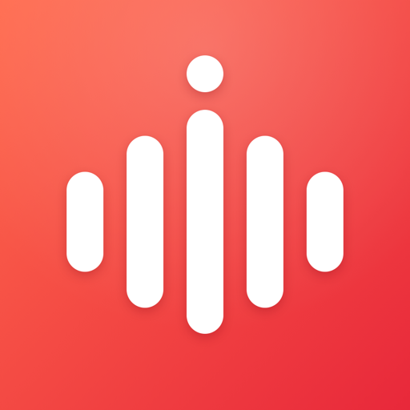
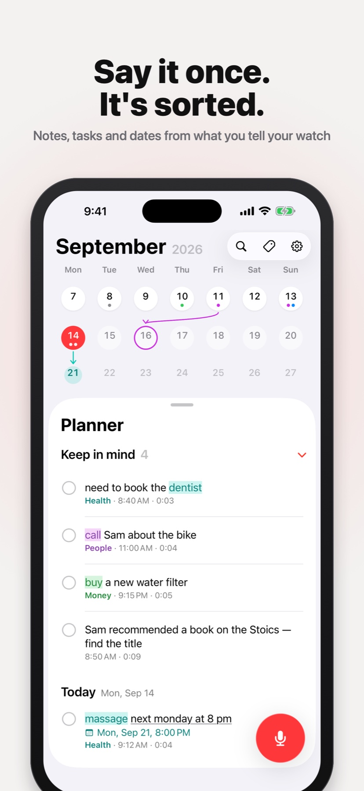
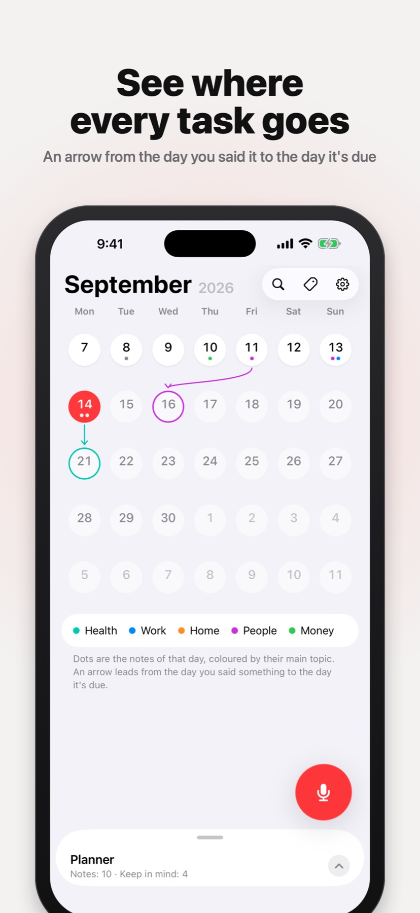
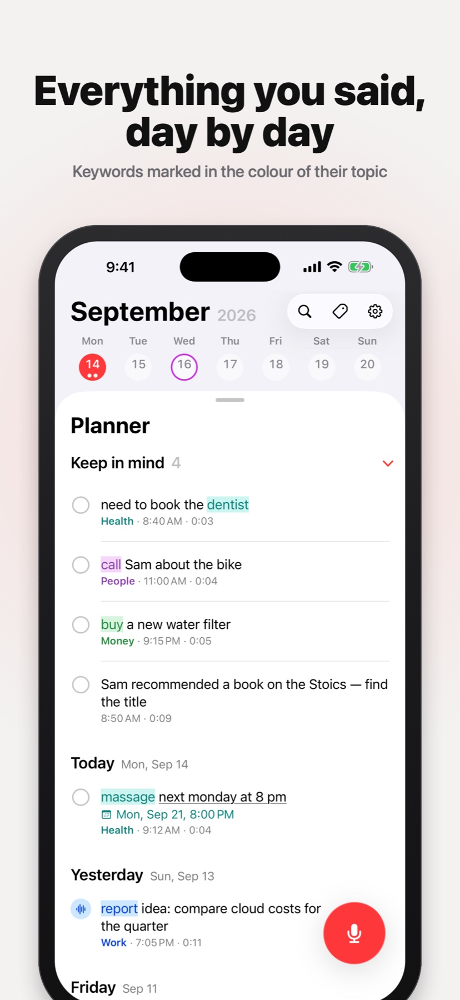
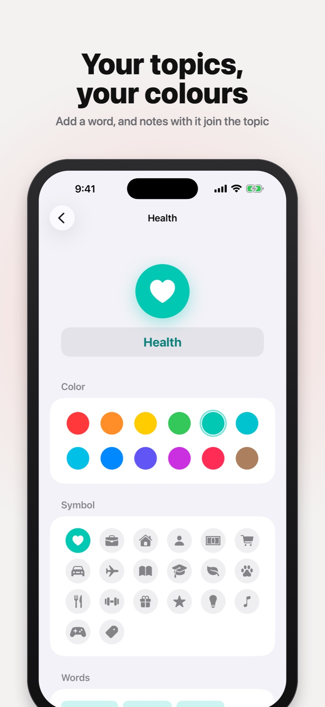

Say it to your Apple Watch. Jot turns it into a note, a task with a date or a reminder — and sorts it by topic.




Open Jot on Apple Watch, or tap its complication or Control Center button — it is already listening. Recordings reach your iPhone even if it is out of range right now.
Speech becomes text on the device itself, in English or Russian, so every note can be read and searched.
“Massage next Monday at 8 pm” becomes a task for Monday, with a reminder in Apple's Reminders app on all your devices.
To-dos without a date gather in one list at the top of the planner — fold it away when it isn't the moment.
Notes join topics by their words, in any form. Keywords are marked in the topic's colour; make your own topics and pick their colours.
Last week and this week at a glance: a dot for every note, and an arrow from the day you said something to the day it's due.
Your recordings, notes and topics are stored on your device. No account needed. Works with iPhone, iPad and Apple Watch.